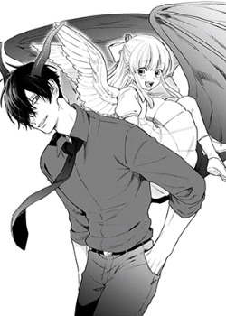

Читать
День, когда ты упала
Как-то раз, демон, сидя на дереве, видит падающее нечто, которое приземлилось аккурат рядом с ним. Снедаемый любопытством, он находит... корзинку? А в ней малыш-ангел! Что он сделает с ним? Убьет? Или будет заботиться?
Манга, созданная KUZE Gaku. Публиковалась с 2018